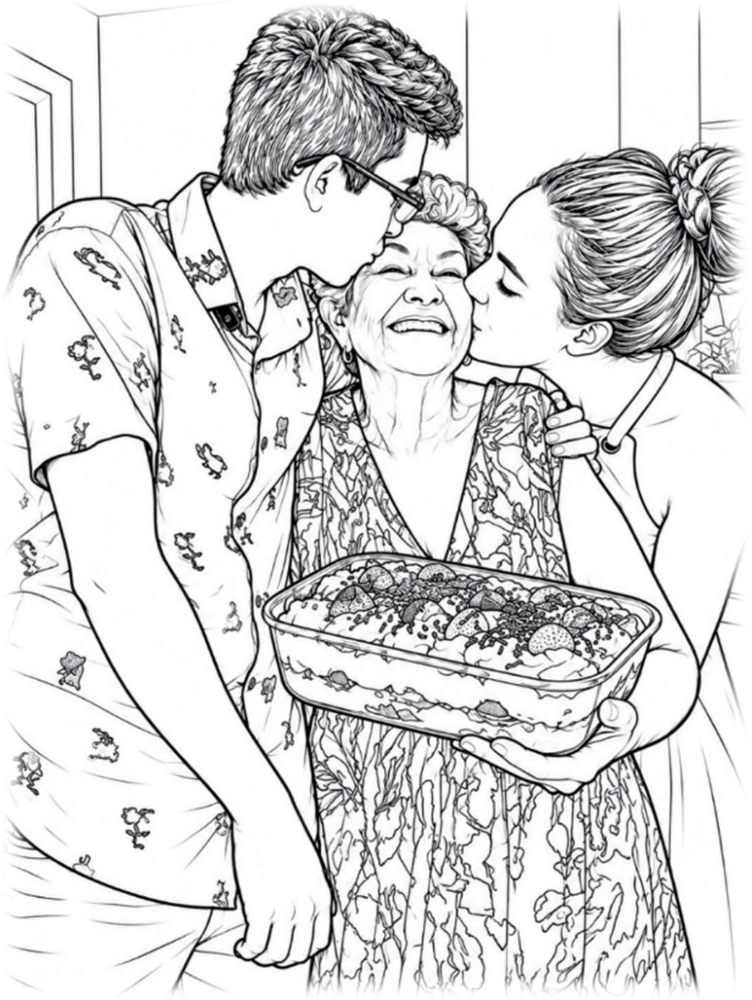
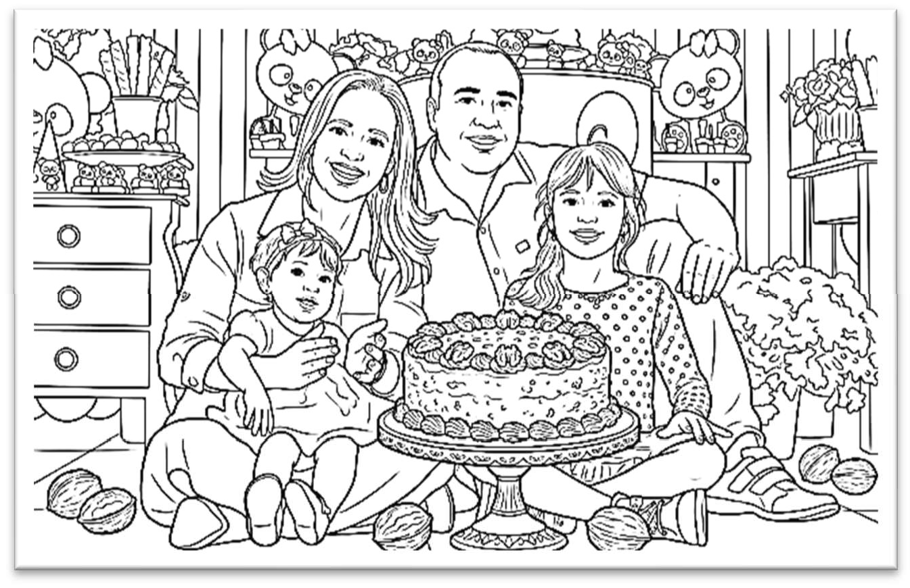

Sorvetão com Bolacha Champanhe
Ingredientes:
1 pacote de bolachas champanhe
1 lata de leite condensado
2 medidas (da lata) de leite integral
3 gemas peneiradas
1 colher (sopa) de amido de milho
1 colher (chá) de essência de baunilha
1 lata de creme de leite sem soro (ou 1 caixinha)
3 claras em neve
4 colheres (sopa) de açúcar
Leite com um toque de licor de chocolate ou conhaque Raspas de chocolate ou achocolatado em pó para decorar
Modo de preparo:
O Creme Amarelo (Base): Em uma panela, misture o leite condensado, o leite, as gemas peneiradas e o amido de milho. Leve ao fogo médio, mexendo sempre, até engrossar e virar um creme bem aveludado. Desligue o fogo, adicione a essência de baunilha e deixe esfriar.
A Camada de Bolachas: Passe as bolachas champanhe rapidamente pelo leite temperado com licor de chocolate ou conhaque, cubra o fundo de um refratário bonito. Despeje o creme amarelo já morno ou frio por cima.
A Cobertura de Sorvete Fofinho: Na batedeira, bata as claras em neve bem firmes. Adicione o açúcar aos poucos e continue batendo até obter um suspiro brilhante. Desligue a batedeira e misture delicadamente o creme de leite sem soro.
Finalização e Congelador: Espalhe essa cobertura leve e fofinha sobre a camada de creme e bolachas. Polvilhe raspas de chocolate por cima para decorar.
Leve ao freezer por pelo menos 4 a 6 horas. Retire alguns minutos antes de servir para ficar cremoso como um verdadeiro sorvete caseiro!

MOMENTO IV
O AMOR QUE CONTINUA
